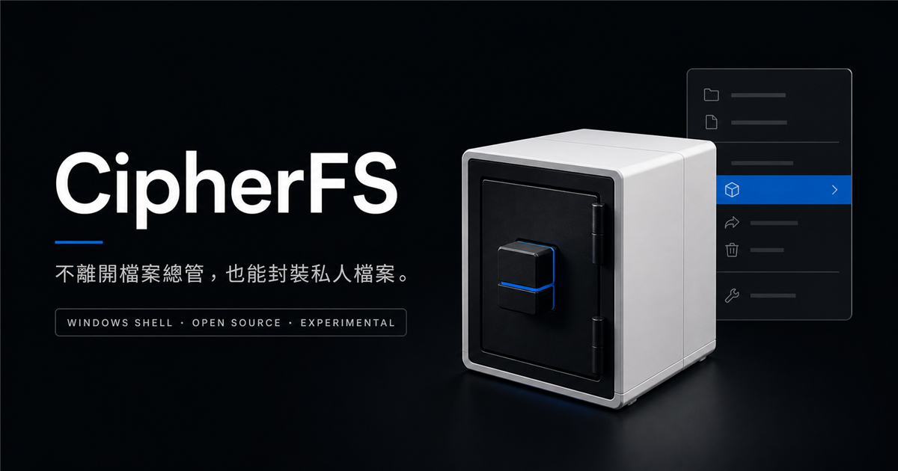

Local-first
封裝、驗證與解開在本機進行；網站不接收你的檔案或密碼。
Windows Shell · Windows x64
CipherFS 將檔案與資料夾封裝為加密的 .cfs 容器，並把建立、唯讀掛載、驗證、解開與變更密碼整合進 Windows Shell。
開放原始碼 · Local-first · 實驗性軟體

A familiar workflow
不用先學新的檔案管理方式。CipherFS 將日常操作留在熟悉的 Windows 介面中。

01 / PACK
從 Explorer 選取來源、設定密碼並指定輸出位置。CipherFS 會建立單一 .cfs 容器，便於移動與離線保存。

02 / OPEN
.cfs雙擊容器即可選擇唯讀掛載、解開、完整驗證或變更密碼。每個動作都有獨立流程，不必從命令列開始。

Read-only mount
CipherFS 透過 WinFsp 將容器掛載為唯讀磁碟。掛載視窗保持開啟時，可直接在 Explorer 中查看內容；完成後明確卸載。


Designed with boundaries
封裝、驗證與解開在本機進行；網站不接收你的檔案或密碼。
資料封裝為一個版本化的 .cfs 檔案，方便移動與管理。
透過 Windows WinFsp 掛載，瀏覽時不修改容器內的內容。
格式、實作、測試與發布流程都能在 GitHub 上公開檢查。
Experimental feature
建立容器時可選擇設定實驗性的 Duress Password。這是研究性功能，不代表可抵抗脅迫、鑑識或其他高風險情境，也不應取代可靠的備份與風險管理。
閱讀工程說明
CipherFS for Windows
下載 Windows Installer，讓 CipherFS 加入你的 Explorer 工作流程。